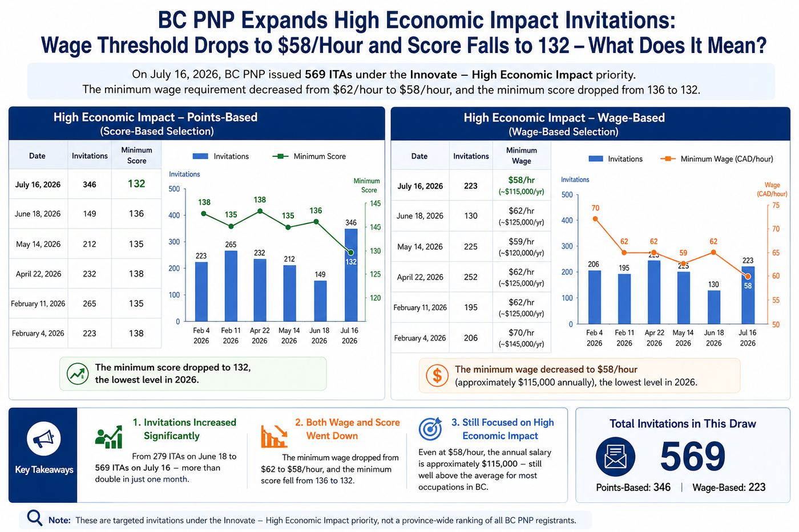

BC PNP扩大High Economic Impact邀请：工资降至58元、分数降至132，释放了什么信号？
Read in English
加拿大卑诗省于2026年7月16日进行了新一轮 British Columbia Provincial Nominee Program（BC PNP）邀请。 本轮共发出569份邀请，是2026年以来规模最大的一次 Innovate – High Economic Impact定向抽选。
相比邀请人数，更值得关注的是两个变化：
- Wage-Based最低工资要求由上一轮的每小时62加元降至58加元；
- Points-Based最低邀请分数由136分降至132分。
不少申请人因此开始关注：BC PNP是否开始放宽了？
本轮抽签有哪些变化？
High Economic Impact – Points-Based 以分数为基础
| 日期 | 获邀人数 | 最低分数 |
|---|---|---|
| 2026-07-16 | 346 | 132 |
| 2026-06-18 | 149 | 136 |
| 2026-05-14 | 212 | 135 |
| 2026-04-22 | 232 | 138 |
| 2026-02-11 | 265 | 135 |
| 2026-02-04 | 223 | 138 |
可以看到，132分是2026年以来最低的一次Points-Based邀请分数。
High Economic Impact – Wage-Based 以工资为基础
| 日期 | 获邀人数 | 最低工资 |
|---|---|---|
| 2026-07-16 | 223 | $58/小时（约$115,000/年） |
| 2026-06-18 | 130 | $62/小时（约$125,000/年） |
| 2026-05-14 | 225 | $59/小时（约$120,000/年） |
| 2026-04-22 | 252 | $62/小时（约$125,000/年） |
| 2026-02-11 | 195 | $62/小时（约$125,000/年） |
| 2026-02-04 | 206 | $70/小时（约$145,000/年） |
今年的最低工资要求并不是持续下降，而是在每小时59至70加元之间波动。 本轮降至每小时58加元，是High Economic Impact抽选推出以来的最低水平。
这是否意味着BC PNP开始放宽？
答案是：未必。
更准确地说，本轮更像是BC扩大了 Innovate – High Economic Impact优先方向下的邀请范围， 而不是整个BC PNP全面降低门槛。
2026年，BC PNP调整了Skills Immigration的筛选重点， 将有限的省提名配额集中用于三项政策优先方向： Care、Build和Innovate。
其中，Innovate旨在吸引能够推动BC经济、创新及生产力发展的高技能人才， 而本次High Economic Impact邀请正是落实这一优先方向的重要方式。
因此，本轮变化反映的并不是政策方向发生改变， 而更可能是BC在保持高经济贡献导向的前提下， 对筛选标准进行了一定程度的调整。
为什么会出现这样的变化？
BC省政府并未公开解释此次调整的具体原因。 不过，结合2026年以来的抽签情况，可以观察到几个值得关注的现象。
一、High Economic Impact邀请规模明显扩大
上一轮，即2026年6月18日，共邀请279人。 本轮邀请人数增加至569人。
在短短一个月内，邀请人数增加了一倍以上。 这说明BC希望有更多符合High Economic Impact定位的人才进入申请阶段。
二、工资和分数同时下降
本轮同时出现：
- 最低工资由每小时62加元降至58加元；
- 最低分数由136分降至132分。
如果只下降工资，可能只是薪资标准调整； 如果只下降分数，也可能只是候选池中的正常变化。
但是，两项标准同时下降，并且伴随邀请人数大幅增加， 说明BC本轮确实扩大了这一特定抽选的邀请范围。
三、BC仍然坚持High Economic Impact
值得注意的是，即使最低工资要求降至每小时58加元， 对应的年薪仍约为115,000加元。
这一收入水平依然高于BC许多职业的平均收入。 因此，此次调整不能简单理解为“降低要求”。
更准确的理解是： BC希望在维持高经济贡献导向的前提下， 让更多符合条件的高技能申请人进入候选范围。
哪些申请人值得重新评估？
本轮调整尤其值得以下人士重新评估自己的竞争力：
- 已经在BC工作的企业管理人员；
- 从事专业职业或受监管高技能职业的申请人；
- 高薪技术人员；
- 已经获得BC长期Job Offer的人士；
- 工资接近或超过目前每小时58加元标准的申请人。
如果申请人过去因为每小时70加元的工资要求， 认为自己没有机会，现在或许值得重新检视自己的条件。
申请人需要特别注意：132分并不是全省统一门槛
本轮公布的132分很容易引起误解。 它并不是所有BC PNP注册申请人的统一最低邀请分数。
与Express Entry不同， BC PNP此次并非对所有注册申请人进行统一排名。
BC PNP是先根据Innovate – High Economic Impact优先方向筛选候选人， 再在这一特定范围内发出邀请。
因此，132分不能被理解为整个BC PNP的最低邀请分数， 也不能简单理解为任何达到132分的申请人都会收到邀请。
此外，BC PNP虽然明确说明High Economic Impact属于Innovate优先方向， 但并未公布哪些Skills Immigration注册申请人会被纳入Points-Based筛选。
因此，申请人不能仅凭自己的注册分数是否达到132分， 来判断自己是否符合下一轮邀请条件。
真正更值得关注的，其实是工资标准、邀请人数及筛选规模的变化， 因为这些数据更能反映BC目前的人才筛选方向。
我们的观察
如果只看这一轮抽签，很容易得出“BC PNP开始放宽”的结论。
但是，如果把2026年所有High Economic Impact抽签放在一起观察， 可以看到另一幅图景。
BC并没有放弃“高经济贡献”这一政策方向。 相反，它正在不断调整工资标准、邀请人数和筛选规模， 在有限的省提名配额下， 寻找更加符合本省劳动力市场及经济发展需求的人才。
对于已经在BC工作的高薪专业人士而言， 这无疑是一个值得关注的积极信号。
至于本轮变化是否意味着BC PNP已经进入持续放宽阶段， 仍有待未来几轮邀请结果进一步验证。
本轮抽签释放的是一个积极信号，但并不代表BC PNP已经全面降低申请门槛。 申请人仍需结合职业、工资、工作地点、注册分数、雇主情况及具体筛选类别， 判断自己是否真正具备竞争力。
BC PNP Expands High Economic Impact Invitations: Wage Threshold Drops to $58/Hour and Score Falls to 132
On July 16, 2026, the Province of British Columbia conducted a new round of invitations under the British Columbia Provincial Nominee Program, issuing a total of 569 Invitations to Apply.
This marked the largest Innovate – High Economic Impact selection conducted in 2026.
Two changes were particularly notable:
- the minimum wage threshold under the Wage-Based selection decreased from $62 per hour to $58 per hour; and
- the minimum registration score under the Points-Based selection decreased from 136 to 132.
These developments have prompted many prospective applicants to ask whether BC PNP is beginning to ease its selection criteria.
What Changed in This Draw?
High Economic Impact – Points-Based
| Date | Invitations | Minimum Score |
|---|---|---|
| July 16, 2026 | 346 | 132 |
| June 18, 2026 | 149 | 136 |
| May 14, 2026 | 212 | 135 |
| April 22, 2026 | 232 | 138 |
| February 11, 2026 | 265 | 135 |
| February 4, 2026 | 223 | 138 |
The latest draw recorded the lowest Points-Based score of the year, with the threshold falling to 132.
High Economic Impact – Wage-Based
| Date | Invitations | Minimum Wage |
|---|---|---|
| July 16, 2026 | 223 | $58/hour, approximately $115,000 annually |
| June 18, 2026 | 130 | $62/hour, approximately $125,000 annually |
| May 14, 2026 | 225 | $59/hour, approximately $120,000 annually |
| April 22, 2026 | 252 | $62/hour, approximately $125,000 annually |
| February 11, 2026 | 195 | $62/hour, approximately $125,000 annually |
| February 4, 2026 | 206 | $70/hour, approximately $145,000 annually |
Rather than declining steadily throughout the year, the wage threshold fluctuated between $59 and $70 per hour. The latest draw lowered it to $58 per hour, the lowest level since the High Economic Impact selection was introduced.
Does This Mean BC PNP Is Becoming More Accessible?
Not necessarily.
A more accurate interpretation is that British Columbia expanded invitations under the Innovate – High Economic Impact priority, rather than lowering the overall standards of the BC PNP.
Earlier in 2026, BC PNP refined its Skills Immigration selection priorities by focusing on three key areas: Care, Build and Innovate.
The Innovate priority is intended to attract highly skilled individuals who can contribute to British Columbia’s economy, innovation and productivity. High Economic Impact invitations are one of the mechanisms used to support this priority.
Viewed in this context, the latest draw does not necessarily signal a change in policy direction. Instead, it appears to represent a measured adjustment to selection criteria while preserving BC’s focus on candidates who can make significant economic contributions.
Why Did BC Lower the Threshold?
The provincial government has not provided an official explanation for these changes. However, several observations can be made based on the selection trends throughout 2026.
1. The Size of the Selection Increased Significantly
The previous draw on June 18 issued 279 invitations. The July 16 draw increased that number to 569 invitations.
This suggests that BC intended to invite a substantially larger number of candidates who meet the objectives of the High Economic Impact priority.
2. Both the Wage Threshold and Registration Score Declined
The minimum wage decreased from $62 per hour to $58 per hour, while the minimum registration score fell from 136 to 132.
If only one indicator had changed, it could have reflected normal fluctuations in the candidate pool. However, when both thresholds fall while the number of invitations more than doubles, it suggests that BC broadened the scope of this particular selection.
3. BC Continues to Prioritize High Economic Contribution
Even after the adjustment, the minimum wage requirement still represents an annual salary of approximately $115,000.
This remains well above the average earnings of many occupations in British Columbia. The latest draw should therefore not be interpreted as a general relaxation of standards.
Instead, it appears to be an effort to include a broader range of highly qualified candidates while preserving the program’s emphasis on economic impact.
Who Should Reassess Their Eligibility?
This draw may be particularly relevant for:
- senior managers already working in British Columbia;
- professionals in regulated or highly skilled occupations;
- highly paid technical workers;
- individuals holding long-term job offers from BC employers; and
- applicants whose wages approach or exceed the current threshold of $58 per hour.
Applicants who previously concluded that they were unlikely to qualify because of the original $70-per-hour threshold may now wish to reassess their eligibility.
The Published Score of 132 Can Be Misleading
Unlike Express Entry, this was not a system-wide ranking of all BC PNP registrants.
BC conducted a targeted selection under the Innovate – High Economic Impact priority before issuing invitations. As a result, 132 should not be interpreted as the general BC PNP invitation threshold.
Furthermore, although BC PNP has confirmed that High Economic Impact forms part of the Innovate priority, it has not published detailed criteria identifying which Skills Immigration registrants are included in the Points-Based selection.
Applicants therefore cannot determine their likelihood of receiving an invitation based solely on whether their registration score reaches 132.
In practice, the changes in the wage threshold, invitation volume and selection size provide a more meaningful indication of BC’s current selection strategy.
Ellen’s Insight
At first glance, this draw may suggest that BC PNP is becoming easier. However, when viewed alongside all High Economic Impact selections conducted in 2026, a different picture emerges.
British Columbia has not abandoned its focus on attracting candidates with significant economic value.
Instead, the province appears to be continuously adjusting wage thresholds, invitation volumes and selection criteria to better align with labour market needs while making effective use of its limited provincial nomination allocation.
For highly paid professionals already working in British Columbia, this is undoubtedly an encouraging development.
Whether this marks the beginning of a longer-term trend toward broader selections, however, will depend on the results of future invitation rounds.